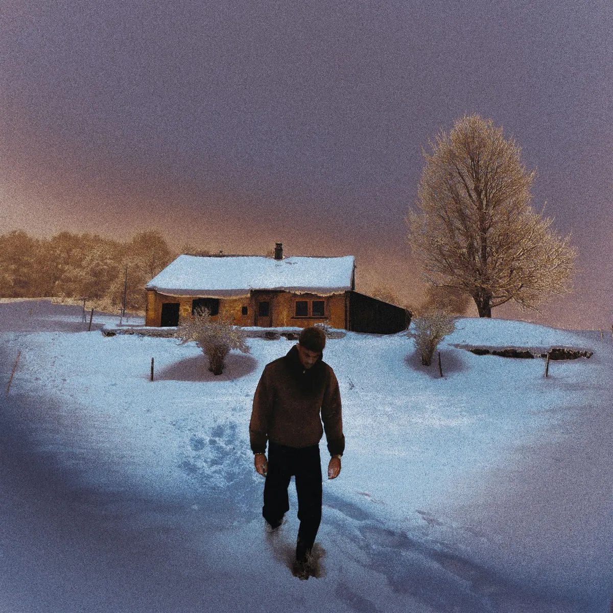

Publié le 22 novembre 2026

Le rappeur Bekar a sorti l'album Alba, l'heure bleue le 20 novembre 2026. Cette édition augmentée ajoute 13 morceaux inédits à son second long format paru en 2025.
Selon la fiche officielle Apple Music, l'ensemble compte désormais 29 titres. Le projet est distribué par le label Panenka Music et NFR Productions. Il prolonge le récit introspectif entamé l'année dernière par l'artiste du Nord.
Cette sortie s'accompagne de nouvelles collaborations avec Limsa d'Aulnay et Romsii. Ils rejoignent Gradur, Georgio et Yoa déjà présents sur la première version. Bekar continue d'affiner son écriture sombre sans changer de direction.
Pourquoi Bekar sort-il une version augmentée d'Alba ?
Bekar poursuit l'univers nocturne d'Alba sorti initialement en juin 2025. Le titre fait référence au moment précédant l'aube, quand le ciel prend une teinte bleue sombre. L'artiste choisit de prolonger ce concept plutôt que de lancer un projet séparé.
Le rappeur nordiste a écrit ces treize nouveaux morceaux pendant sa tournée. Cette formule lui permet de boucler l'histoire de son album sur la même ligne artistique. Le public découvre ainsi une œuvre dense qui rassemble l'intégralité de sa démarche récente.
Cette stratégie offre une seconde vie au projet sur les plateformes d'écoute. La démarche consolide sa signature introspective tout en alimentant son répertoire pour la scène.
| Édition | Date de sortie | Nombre de titres | Invités principaux |
|---|---|---|---|
| Alba (Édition initiale) | 27 juin 2025 | 16 | Gradur, Georgio, Yoa |
| Alba, l'heure bleue | 20 novembre 2026 | 29 (dont 13 inédits) | Limsa d'Aulnay, Romsii, Gradur, Georgio, Yoa |
Quels sont les morceaux marquants de cette nouvelle édition ?
La rencontre avec Limsa d'Aulnay sur le morceau D'Aulnay à Roubaix constitue le morceau central des inédits. Les deux artistes croisent leurs textes pour raconter le quotidien de leurs quartiers. Le titre réunit deux plumes axées sur le détail vécu.
La production du titre Hiver par Myth Syzer apporte une ambiance synthétique très froide. Des morceaux comme Mauvais film et Noir pour demain prolongent cette esthétique cinématographique. Bekar y aborde le spleen et les doutes personnels.
Ce format très long de 29 pistes présente toutefois un risque de répétition. Si ces morceaux fonctionnent bien lors des concerts rap à Lille, l'écoute intégrale révèle quelques redites thématiques.
Comment s'inscrit ce projet dans la scène du Nord ?
Bekar confirme sa place parmi les auteurs majeurs du Nord de la France. Son écriture reste ancrée dans l'observation des détails du quotidien et de son environnement.
Il partage cet attachement territorial et social avec Ben PLG, autre figure forte de la région. Tous deux développent un rap introspectif sans céder aux effets de mode.
Avec cette édition enrichie, Bekar conclut une période créative très productive. Il affirme son identité tout en restant fidèle à ses premiers auditeurs.